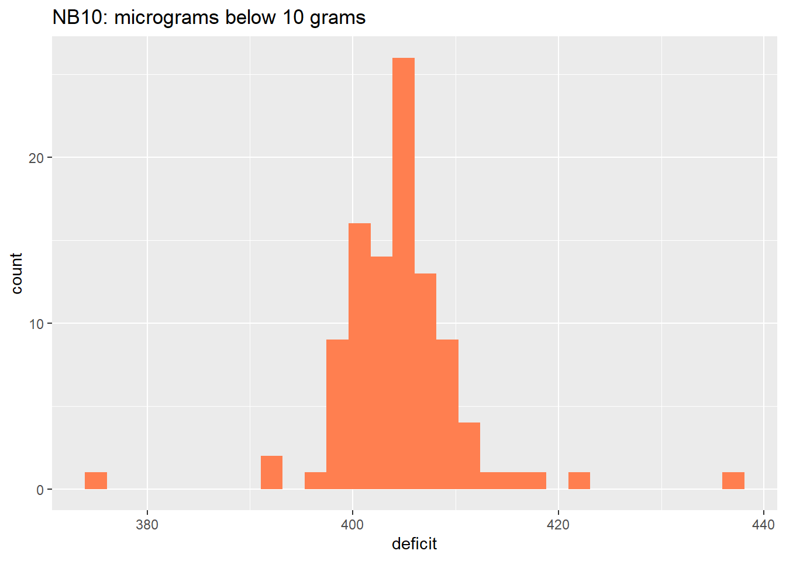
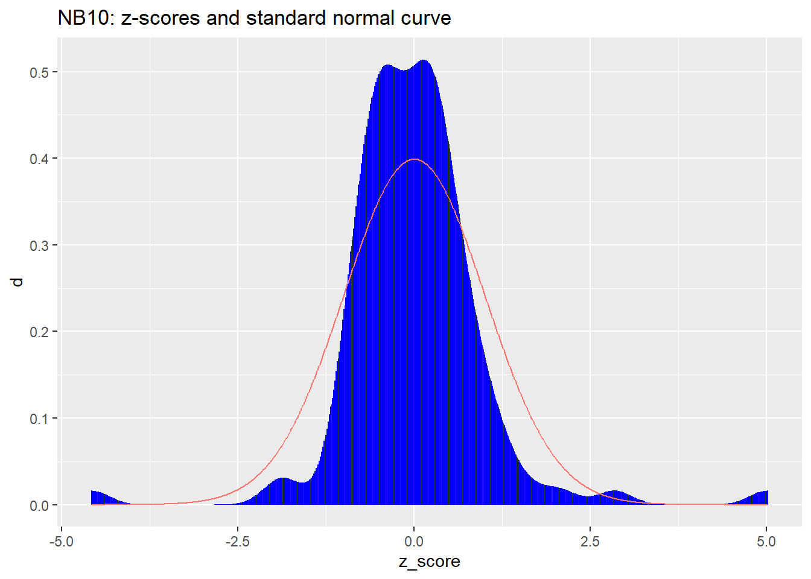

| source | FDR predicted % |
|---|---|
| Digest | 43 |
| Gallup re Digest | 44 |
| Gallup re election | 56 |
| election result | 62 |
5 Sampling and Study Design
Part 1, session 3a of Data Mining Intro
Abstract
Introduce basic ideas and methods in statistical sampling theory and the design of experimental or observational studies. 5.1 Introduction
This session introduces some basic ideas and methods in statistical sampling theory and the design of experimental or observational studies. We follow the book “Statistics, 4/e” by Freedman, Pisani, and Purves (FPP).
As our world becomes evermore connected digitally, the available data of interest may seem either to encompass the entire population of interest (e.g., online behavior of consumers), or else to be highly focused (e.g., the purchasing history of a particular customer). At these extremes the notion of a sample from a population might seem irrelevant. But sampling theory becomes relevant as soon as we transition from describing the data on hand to asking how current phenomena might change under various scenarios.
We begin with examples of observational and experimental studies, and review some sampling strategies under practical constraints.
5.2 Observational Study Examples
5.2.1 Literary Digest Poll, 1936
In 1936, President Franklin Delano Roosevelt (FDR) was completing his first term in office, and running for re-election against Alfred Landon, Governor of Kansas state. Most pundits predicted that FDR would win.
The Literary Digest magazine, however, predicted a decisive Landon victory based on a massive poll having 2.4 million respondents. The Digest predicted that Roosevelt would get only 43% of the vote.
George Gallup had just created his polling organization. Gallup took a sample of 3,000 voters to estimate what the Digest would predict, and took a sample of 50,000 voters to predict the election. Here are the results.
As it turned out, Roosevelt won by a landslide: 62% versus 38%. The Digest’s error of nearly 20 percentage points is the largest in history by a major poll. What went wrong?
Moral: a large sample size alone does not guarantee accuracy. Ask yourself how the sample was chosen.
5.2.2 Truman versus Dewey, 1948
Truman was a colorful and effective US president, but he was the underdog in the 1948 elelction. Three major polling organizations covered the election: Crossley for the Hearst newspapers, Gallup (synicated in ~100 newspapers across the country), and Roper for Fortune magazine. By the fall of 1948, all three put Dewey ahead of Truman by 5 or more percentage points. Here are the predicted and actual percentages.
| source | Truman | Dewey | Thrumond | Wallace |
|---|---|---|---|---|
| Crossley | 45 | 50 | 2 | 3 |
| Gallup | 44 | 50 | 2 | 4 |
| Roper | 38 | 53 | 5 | 4 |
| election result | 50 | 45 | 3 | 2 |
All three polling organizations not only under-estimated the percentage vote for Truman, they were also over-confident in their predictions. Again we ask, what went wrong?
The three polling organizations used quota sampling. That is, in an effort to construct samples representative of all voters, the polling organizations ensured that sample percentages of women, men, employed, unemployed, and so on, exactly matched known population percentages.
Interviewers were given prescribed numbers of voters to interview in each category, and were otherwise unconstrained in their choice of subjects to interview.
The problem is that there are many factors that influence voting, and many of them cannot be known in advance of the election. In addition, allowing the interviewers to select their subjects (constrained only by certain demographic quotas to be fulfilled) may introduce an unwitting bias, namely toward those whom the interviewers find easier to include. As it happened, quota sampling produced a bias toward those subjects who voted Republican.1
5.2.3 Using Chance in Surveys
Since 1948 polling organizations have adopted some form of probability sampling. The idea is that there are too many known and unknown factors that influence voting to control for them all. Therefore it is better to choose subjects at random, allowing chance to provide a sample that approximately represents the population (with better approximation for larger sample sizes).
The leading example of probability sampling is simple random sampling. Imagine a box of tickets, one ticket per registered voter. We shuffle the tickets, randomly select one to include in our sample, set that ticket aside, and then repeat this process.
When little is known about a population, simple random sampling yields more accurate estimates of a population percentage or population average than other probability samples of the same size.2 The problem is that simple random sampling is impractical in many situations. Even if polling organizations had a list (sampling frame) of all registered voters in the country, it would be prohibitively costly to interview subjects scattered across the country.
Instead, polling organizations often use multi-stage cluster sampling. As an example, from 1952 to 1984 the Gallup organization partitioned the 50 states into four regions: Northeast, South, Midwest, and West. In each region, towns are selected at random; within each town, wards are selected at random; within each ward, precincts are selected at random; and fnally within each precinct, households are selected at random. Then the eligible voters present in the household (cluster) are interviewed.3 At each stage, random selection may be weighted, e.g., by population size.
Probability sampling of any type has two important features:
- interviewers have no discretion in the choice of subjects;
- there is a prescribed procedure for selecting subjects, involving the planned use of chance.
The hallmark of a probability sample is that the chance of including any given individual in the sample can be calculated in advance.
5.2.4 More Recent Election Polls
Since the 1952 election Gallup and other pollsters have used probability samples, and have, on the whole, reduced the magnitude of prediction error. Here are the prediction errors of the Gallup organization. (Ross Perot’s candidacy made 1992 an especially challenging year to predict.)
| year | n | winner | Gallup | actual | error |
|---|---|---|---|---|---|
| 1952 | 5385 | Eisenhower | 51.0 | 55.1 | -4.1 |
| 1956 | 8144 | Eisenhower | 59.5 | 57.4 | 2.1 |
| 1960 | 8015 | Kennedy | 51.0 | 49.7 | 1.3 |
| 1964 | 6625 | Johnson | 64.0 | 61.1 | 2.9 |
| 1968 | 4414 | Nixon | 43.0 | 43.4 | -0.4 |
| 1972 | 3689 | Nixon | 62.0 | 60.7 | 1.3 |
| 1976 | 3439 | Carter | 48.0 | 50.1 | -2.1 |
| 1980 | 3500 | Reagan | 47.0 | 50.7 | -3.7 |
| 1984 | 3456 | Reagan | 59.0 | 58.8 | 0.2 |
| 1988 | 4089 | Bush | 56.0 | 53.4 | 2.6 |
| 1992 | 2019 | Clinton | 49.0 | 43.0 | 6.0 |
| 1996 | 2895 | Clinton | 52.0 | 49.2 | 2.8 |
| 2000 | 3571 | Bush | 48.0 | 47.9 | 0.1 |
| 2004 | 2014 | Bush | 49.0 | 50.6 | -1.6 |
5.2.5 UC Berkeley Admissions
In a previous session we discussed a study from the 1970’s arising from a concern that admissions to graduate school at UC Berkeley might be biased against females. The study determined that the apparent bias was an instance of Simpon’s Paradox: females tended to apply to the departments having lower overall admission rates, resulting in an overall lower admission rate for females, even though most of the departments admitted a greater percentage of their female applicants than their male applicants.
In the context of sampling theory, we note that the data were limited to a single year, and included all applicants. One might ask whether the differences in admission rates were “statistically significant”, but the question presumes that the data are the result of a probability sample from a larger population, which is not the case here. The year of data (1973) was accepted as evidence that the apparent bias was an instance of Simpson’s Paradox. The concern was resolved under the assumption that the data and circumstances from that particular year were indicative of the admissions process.
Moral: the expected accuracy of statistical estimates has been established for various types of probability sampling, but if the data are not the result of a probability sample from a defined population, these established formulas are not applicable.
5.3 Class Exercise
Break into teams of two or three to identify examples of (or opportunities for) observational studies in the context of work. Which of these would you regard as most valuable? Based on the examples above, or your experience, what are the potential pitfalls of such studies? Take 15 minutes to prepare to report to the class.
5.4 Experimental Study Examples
5.4.1 Salk Vaccine Field Trial
Polio has been a devastating, sometimes fatal, disease. The first epidemic in the US was in 1916. In the following years the disease claimed several hundreds of thousands of victims, especially children. By the 1950’s several drugs against polio were in development. The drug developed by Jonas Salk had particularly promising lab results. By 1954 the US government determined the drug should be tested in the field.
One might ask why a promising drug shouldn’t simply be adopted, rather than field-tested. One problem was that polio incidence varied considerably from year to year. In 1952 there were about 60,000 cases. The following year there were half that number. Had the vaccine been adopted in 1954, any decrease in incidence could well have been ascribed to annual variation, rather than the effectiveness of the vaccine.
The decision to test rather than adopt a promising drug is a difficult question of medical ethics. For the polio vaccine, there were potential risks in taking the drug, and so the government decided a test was needed to establish whether the benefits of adopting the drug would outweigh the risks.
The National Foundation for Infantile Paralysis (NFIP) ran a controlled experiment among children in grades 1-3, an especially vulnerable age group. The field trial was carried out in selected school districts throughout the country, where the risk of polio was high. AS originally designed, the NFIP vaccinated all children in grade 2 whose parents consented to the vaccination, leaving unvaccinated those children in grade 2 whose parents did not consetn. Children in grades 1 and 3 were used as the controld group (were not vaccinated). The following table shows the results.
| grade | assignment | size | rate |
|---|---|---|---|
| 2 | treatment | 225000 | 25 |
| 1, 3 | control | 725000 | 54 |
| 2 | no_consent | 125000 | 44 |
Participating public health experts raised several concerns with the NFIP design. Polio can be transmitted by touch, so the incidence of polio infection may vary by grade. Also, parental consent is a potential confounding factor. More highly educated parents are more likely to consent, but their children are at greater risk. (Lower socio-economic status is associated with lower hygiene, and thus a greater chance of early exposure to polio when the mother’s antibodies would be activated, enabling the child to fight off a subsequent infection.) Consequently children of non-consenting parents should not be included in the control group, but rather analyzed separately.
Consequently a second experiment was conducted in which both the treatment and control group came from the same population of children whose parents consented to vaccination. Those children would be assigned at random either to the treatment (vaccinated) or control (unvaccinated) group. Moreover, this was to be a “double-blind” experiment: the assignment of each participating child would be closely held among the administrators of the experiment, and not shared with participating parents, medical staff responsible for injections (of either the vaccine or a saline solution), or physicians determining whether a paricipating child had or had not contracted polio. Children whose parents did not consent to vaccination would be tracked separately from others. Here are the results of the double-blind experiment.
| assignment | size | rate |
|---|---|---|
| treatment | 200000 | 28 |
| control | 200000 | 71 |
| no_consent | 350000 | 46 |
Both experments provide strong evidence of the effectiveness of the vaccine. In addition, the second experiment bears out the concern that parental consent could be a confounding factor. Among the children of consenting parents who served as controls, and thus were not vaccinated, the polio rate is markedly higher than in the NFIP experiment where controls consisted of children in grades 1 and 3, some of whose parents would not have consented to vaccination had they been asked.
Key points:
- enlisting experts to identify potential confounding factors is essential to good experimental design;
- double-blind experiments are often required to avoid potential unwitting bias in treatment-control assignments or the determination of experimental outcomes.
5.4.2 Portacaval Shunt
In some cases of cirrhosis of the liver, the patient may start to hemorrhage and bleed to death. One treatment involves surgery to redirect the flow of blood through a portacaval shunt. The operation to create the shunt is long and hazardous. Do the benefits outweigh the risks? The effectiveness of this surgery has been evaluated in 51 studies, summarized in the following table.
| design | marked | moderate | none |
|---|---|---|---|
| No controls | 24 | 7 | 1 |
| Controls, but not randomized | 10 | 3 | 2 |
| Randomized controlled | 0 | 1 | 3 |
There were 32 studies without controls (first line in the table): 24/32 of these studies, or 75%, were markedly enthusiastic about the shunt, concluding that the benefits definitely outweighed the risks. In 15 studies there were controls, but assignment to treatment or control was not randomized. Only 10/15, or 67%, were markedly enthusiastic about the shunt. But the 4 studies that were randomized and controlled showed the surgery to be of little or no value. The badly designed studies exaggerated the value of this risky surgery.
A randomized, controlled experiment begins with a well-defined patient population. Some are eligible for the trial. Others are ineligible: they may be too sick to undergo the treatment, or they may have the wrong kind of disease, or they may not consent to participate. Eligibility is determined first; then the eligible patients are randomized to treatment or control. That way, the comparison is made only among patients who could have received the therapy. The bottom line: the control group is like the treatment group. By contrast, with poorly-controlled studies, ineligible patients may be used as controls. Moreover, even if controls are selected among those eligible for surgery, the surgeon may choose to operate only on the healthier patients while sicker patients are put in the control group.
This sort of bias seems to have been at work in the poorly-controlled studies of the portacaval shunt. In both the well-controlled and the poorly-controlled studies, about 60% of the surgery patients were still alive 3 years after the operation. In the randomized controlled experiments, the percentage of controls who survived the experiment by 3 years was also about 60%. But only 45% of the controls in the non-randomized experiments survived for 3 years.
| design | surgery | control |
|---|---|---|
| randomized | 60 | 60 |
| non_randomized | 60 | 45 |
In both types of studies, the surgeons seem to have used similar criteria to select patients eligible for surgery. Indeed, the survival rates for the surgery group are about the same in both kinds of studies. So, what was the crucial difference? With the randomized controlled experiments, the controls were similar in general health to the surgery patients. With the poorly controlled studies, there was a tendency to exclude sicker patients from the surgery group and use them as controls. That explains the bias in favor of surgery.
5.4.3 Repeated Weighing of NB10
In an ideal world, the same thing measured repeatedly would yield the same result. In practice, each result is thrown off by chance error that changes from measurement to measurement. One of the earliest scientists to deal with this problem was Tycho Brahe´ (1546–1601), the Danish astronomer. But it was probably noticed first in the market place, as merchants weighed out spices and measured off lengths of silk. There are several questions about chance errors. Where do they come from? How much is likely to cancel out in the average? The first question has a short answer: in most cases, nobody knows. We’ll address the second question via an example of precision weighing done at the National Bureau of Standards (NBS), now the National Institute of Science and Technology (NIST).
First, a brief explanation of standard weights. Stores weigh merchandise on scales. The scales are checked periodically by local weights-and-measures officials, using local standard weights. The local standards too must be periodically checked against external standards, and so on. Eventually weights are calibrated against national standards. In the US that is done by NBS, now NIST.
This chain of comparisons ends at the International Prototype Kilogram (for short, The Kilogram), a platinum-iridium weight held at the International Bureau of Weights and Measures near Paris. By international treaty (The Treaty of the Meter, 1875) “one kilogram” was defined to be the weight of this object under standard conditions. All other weights are determined relative to The Kilogram. For instance, The Pound = 0.4539237 of The Kilogram.
Each country that signed the Treaty of the Meter got a national prototype kilogram, whose exact weight had been determined as accurately as possible relative to The Kilogram. These prototypes were distributed by lot, and the United States got Kilogram #20. The values of all the U.S. national standards are determined relative to K20
In the US, accuracy in weighing at the supermarket ultimately depends on the accuracy of the calibration work by NBS/NIST. One basic issue is reproducibility: if a measurement is repeated, how much will it change? We will discuss the results for one such weight, called NB 10, whose nominal value is 10 grams (about the weight of two nickels). In fact, the people who manufactured NB 10 tried to make it weigh 10 grams and missed by a little. NB 10 was acquired by NBS around 1940, and they’ve weighed it many times since then. We’ll look at 100 of these measurements, which were made in the same room, on the same apparatus, by the same technicians. Every effort was made to follow the same procedure each time. All the factors known to affect the results, like air pressure or temperature, were kept as constant as possible.
Here are the first 5 measurements of NB10 in grams, along with the deficit (shortfall) from 10 grams expressed in micrograms.
| measurement | deficit |
|---|---|
| 9.999591 | 409 |
| 9.999600 | 400 |
| 9.999594 | 406 |
| 9.999601 | 399 |
| 9.999598 | 402 |
Here are all 100 measurements expressed as deficits in micrograms.
| index | deficit | index | deficit | index | deficit | index | deficit |
|---|---|---|---|---|---|---|---|
| 1 | 409 | 26 | 397 | 51 | 404 | 76 | 404 |
| 2 | 400 | 27 | 407 | 52 | 406 | 77 | 401 |
| 3 | 406 | 28 | 401 | 53 | 407 | 78 | 404 |
| 4 | 399 | 29 | 399 | 54 | 405 | 79 | 408 |
| 5 | 402 | 30 | 401 | 55 | 411 | 80 | 406 |
| 6 | 406 | 31 | 403 | 56 | 410 | 81 | 408 |
| 7 | 401 | 32 | 400 | 57 | 410 | 82 | 406 |
| 8 | 403 | 33 | 410 | 58 | 410 | 83 | 401 |
| 9 | 401 | 34 | 401 | 59 | 401 | 84 | 412 |
| 10 | 403 | 35 | 407 | 60 | 402 | 85 | 393 |
| 11 | 398 | 36 | 423 | 61 | 404 | 86 | 437 |
| 12 | 403 | 37 | 406 | 62 | 405 | 87 | 418 |
| 13 | 407 | 38 | 406 | 63 | 392 | 88 | 415 |
| 14 | 402 | 39 | 402 | 64 | 407 | 89 | 404 |
| 15 | 401 | 40 | 405 | 65 | 406 | 90 | 401 |
| 16 | 399 | 41 | 405 | 66 | 404 | 91 | 401 |
| 17 | 400 | 42 | 409 | 67 | 403 | 92 | 407 |
| 18 | 401 | 43 | 399 | 68 | 408 | 93 | 412 |
| 19 | 405 | 44 | 402 | 69 | 404 | 94 | 375 |
| 20 | 402 | 45 | 407 | 70 | 407 | 95 | 409 |
| 21 | 408 | 46 | 406 | 71 | 412 | 96 | 406 |
| 22 | 399 | 47 | 413 | 72 | 406 | 97 | 398 |
| 23 | 399 | 48 | 409 | 73 | 409 | 98 | 406 |
| 24 | 402 | 49 | 404 | 74 | 400 | 99 | 403 |
| 25 | 399 | 50 | 402 | 75 | 408 | 100 | 404 |
Here is the distribution of the NB10 deficits expressed as a histogram.

The average deficit is 405 micrograms, and the standard deviation is about 6.5 micrograms.
The next figure shows the deficits expressed in standard units. The histogram has been smoothed into an approximate density function, with a standard normal curve superimposed.

The first of the two figures above shows that the average deficit of NB10 is around 405 micrograms. Thus the actual weight of NB10 is likely to be about 10 grams minus 405 micrograms. Knowing this, one could calibrate other weights against NB10, adjusting for the fact that NB10 weighs this much less than the nominal 10 grams. Without such knowledge, taking NB10 at face value as weighing 10 grams would amount to a biased measurement system.
The second of the two figures above reveals measurements whose standard units (z-scores) are near \(\pm 5\). (The indices of the outlying measurements are #86 and #94.) NBS could find no reason to disqualify these values. Now, a sample of size 100 from a normal distribution would be highly unlikely to include such large deviations from the average value. We conclude that this very carefully controlled measurement process produces values that do not follow the normal distribution.
Key points:
- High-precision measurement systems typically reveal chance errors in the measurement process. Before relying on such systems one should determine the likely size of such chance errors by generating repeated measurements and calculating their standard deviation (or some other measure of the spread in values).
- A small proportion of outlying values are possible even from the most careful measurement process. These outliers strongly influence the calculated mean and standard deviation of the data.
- One should consider the possibility that a measurement system is biased. In this case, each measurement can be represented as the sum of three terms: the actual (unknown) value + bias + chance error.
5.5 Accuracy of the Sample Average
The last example showed that NB10, nominally weighing 10 grams, actually weighs a bit less, namely, about 405 micrograms less than 10 grams. Of course a new batch of measurements of NB10 might yield an average deficit differing a bit from 405 micrograms. Just how different might that new average be? Here is a quick review of the mathematical answer to that question.
We model a sequence of measured deficits
\[ \begin{align} D_{\bullet} &= (D_1, \ldots, D_n) \end{align} \qquad(5.1)\]
as independent, identically distributed random variables (whose common distribution is something like the histogram shown above). Each measured deficit \(D_j\) is represented as the sum of \(\mu_d\), the actual (but unknown) deficit, plus \(\epsilon_j\), a chance error.
\[ \begin{align} D_j &= \mu_D + \epsilon_j \end{align} \qquad(5.2)\]
We assume the population distribution of the chance errors has the same shape and scale as that of measured deficits, but with a population mean value of zero. Thus the chance errors have the same population standard deviation, \(\sigma_D\), as the measured deficits. Based on the 100 NB10 measurements this unknown value is not too far from 6.5 micrograms.
Then \(S(D_{\bullet})\), the sum of \(n\) measured deficits, has the following expected value (population mean) and population variance.
\[ \begin{align} S(D_{\bullet}) &= \sum_{j = 1}^n D_j \\ &= \sum_{j = 1}^n ( \mu_D + \epsilon_j ) \\ &= n \; \mu_D \; + \; \sum_{j = 1}^n \epsilon_j \\ \\ E \left\{ S(D_{\bullet}) \right\} &= n \; \mu_D \\ \\ Var \left\{ S(D_{\bullet}) \right\} &= n \; Var \left\{ \epsilon_j \right\} \\ &= n \; \sigma_D^2 \\ \end{align} \qquad(5.3)\]
Denoting the sample average as \(A(\cdot)\), we have
\[ \begin{align} A(D_{\bullet}) &= \frac{1}{n} S(D_{\bullet}) \\ &= \mu_D \; + \; A(\epsilon_{\bullet}) \\ \\ E \left\{ A(D_{\bullet}) \right\} &= \mu_D \\ \\ Var \left\{ A(D_{\bullet}) \right\} &= \frac{1}{n^2} Var \left\{ S(D_{\bullet}) \right\} \\ &= \frac{1}{n^2} \; n \; \sigma_D^2 \\ &= \frac{1}{n} \; \sigma_D^2 \\ \\ SD \left\{ A(D_{\bullet}) \right\} &= \sqrt(Var \left\{ A(D_{\bullet}) \right\}) \\ &= \frac{1}{\sqrt{n}} \; \sigma_D \\ \end{align} \qquad(5.4)\]
Thus the population standard deviation of the sample average \(A(D_{\bullet})\) can be estimated from the sample standard deviation:
\[ \begin{align} \hat{SD} \left\{ A(D_{\bullet}) \right\} &= \frac{1}{\sqrt{n}} \; \hat{\sigma}_D \\ \end{align} \qquad(5.5)\]
Returning to our sample of 100 NB10 measurements, with a sample average of about 405 micrograms and a sample standard deviation of about 6.5 micrograms, we have
\[ \begin{align} \hat{SD} \left\{ A(D_{\bullet}) \right\} &= \frac{1}{\sqrt{100}} \; 6.5 \\ &= 0.65 \end{align} \qquad(5.6)\]
Our sample average of 405 micrograms probably deviates from the actual deficit of NB10 by no more 2 micrograms or so.
5.6 Team Exercises
A teaching assistant gives a quiz to his section. There are 10 questions on the quiz and no part credit is given. After grading the papers, the TA writes down for each student the number of questions the student got right and the number wrong. The average number of right answers is 6.4 with an SD of 2.0. The average number of wrong answers is [?] with an SD of [?]. Fill in the blanks, or do you need the data? Explain briefly.
A large, representative sample of Americans was studied by the Public Health Service, in the Health and Nutrition Examination Survey (HANES2). The percentage of respondents who were left-handed decreased steadily with age, from 10% at 20 years to 4% at 70. “The data show that many people change from left-handed to right-handed as they get older.” True or false? Why? If false, how do you explain the pattern in the data?
For a certain group of women, the 25th percentile of height is 62.2 inches and the 75th percentile is 65.8 inches. The histogram follows the normal curve. Find the 90th percentile of the height distribution.
5.7 Resources
“Statistics, 4/e” by Freedman, Pisani, and Purves ([FPP](https://www.goodreads.com/book/show/147358.Statistics))
[Sampling Techniques, 3/e](https://www.google.co.uk/books/edition/Sampling_Techniques/8Y4QAQAAIAAJ?hl=en) by William G. Cochran
Gallup and others used quota sampling in pre-election surveys from 1936 though 1948. Interviewers consistently chose a disproportionate number of people who wound up voting Republican, but until 1948, a close election, the Democratic lead was larger than this oversampling of Republicans.↩︎
On the other hand, if a percentage or average is known to vary across identifiable subsets (strata) of the population, then stratified sampling can yield more accurate estimates than simple random sampling.↩︎
Each interviewer is given a prescribed protocol for selecting a an eligible voter within the household (e.g., oldest eligible female, if present, or else youngest eligible male), with these prescriptions possibly varying among interviewers.↩︎